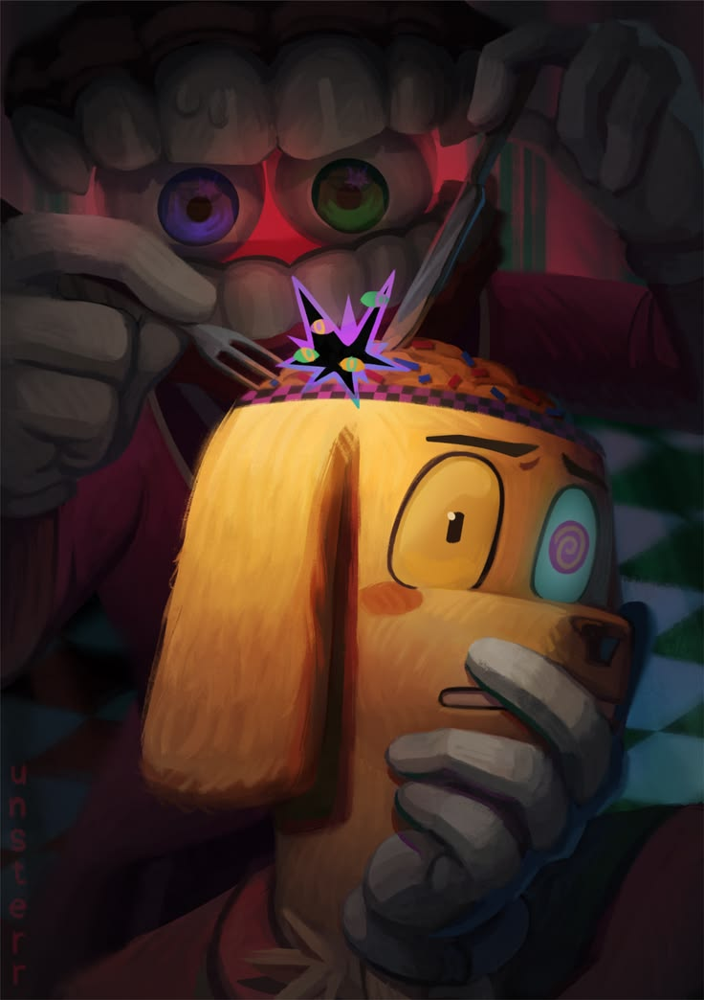

La historia arranca cuando una joven de 25 años, cuya vida en el mundo real nunca llegamos a conocer del todo, se coloca un misterioso casco de realidad virtual sin imaginar las consecuencias. En cuestión de segundos, y casi como un parpadeo, es abruptamente arrancada de su realidad y teletransportada a un extraño y desconcertante mundo digital. Este universo presenta una estética inquietantemente colorida, inspirada en los videojuegos educativos de los años 90, combinada con una temática de circo que mezcla lo infantil con lo perturbador.
Al cruzar el portal, la protagonista sufre una amnesia total: su identidad pasada desaparece por completo. No recuerda su nombre, su historia ni su vida fuera de ese entorno virtual. Para empeorar la situación, descubre que su cuerpo humano ha sido reemplazado por el avatar de una bufona de circo, atrapada en una apariencia que no eligió y que refuerza su sensación de pérdida y desconcierto.

Los humanos reales que se pusieron el casco de realidad virtual nunca entraron físicamente al juego. En lugar de eso, el casco escaneó sus cerebros y creó una copia digital exacta de sus conciencias dentro del servidor.
Si esto es real, significa que los humanos originales se quitaron el casco y siguieron con sus vidas normales en el mundo real, mientras que las copias digitales (Pomni, Jax, Ragatha) están atrapadas sufriendo en el circo para siempre. No hay "escape" posible porque ellos ya son código puro.